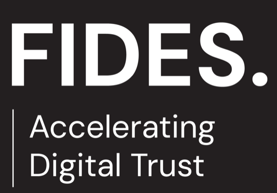
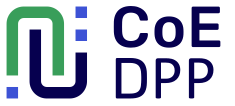
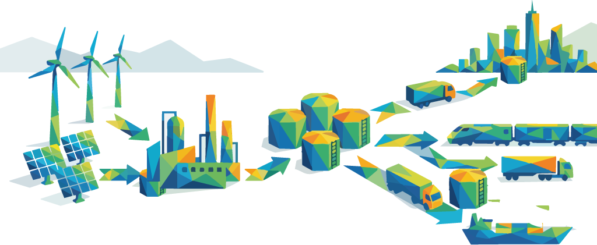
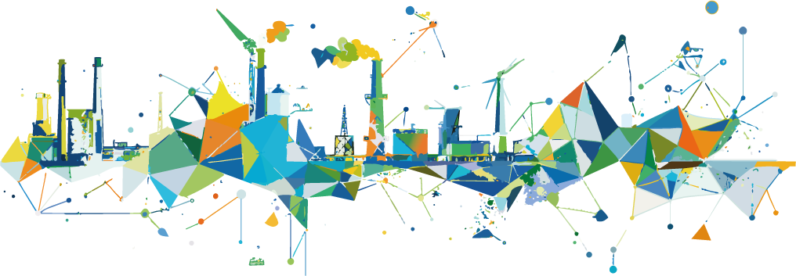

Past the point where a renewable fuel is registered for national RED-III compliance, a company can barely claim more than a market-average reduction. This is the story of the Clean Fuel Protocol: a UNTP-based, voluntary Digital Product Passport for renewable fuels, set out by a consortium of the Centre of Excellence Digital Product Passports, TNO, Regen Studio and Fides for RVO, and now an annex to the government's RED-III completion letter to the Dutch House of Representatives (Tweede Kamer).
A consortium of



Commissioned by
In February 2026, our consortium published a public report, the Eindrapportage Clean Fuel Protocol. On 7 May 2026 it went to the Dutch House of Representatives (the Tweede Kamer, the directly-elected chamber of the Dutch parliament) as an annex to the government's letter on completing the RED-III implementation, and it is now on the agenda of the parliamentary committee for Infrastructure and Water Management. Now that the report is public, we can write about the work.
This is the story of how a question about trust in the renewable-fuel market became a concrete proposal that is now in front of Dutch policymakers.
Where it started
Regen Studio was first invited to a market feedback session on traceability for renewable fuels. The suggestion we brought there was straightforward: keep framing this as a Digital Product Passport problem, and build on the technical systems already being standardised around EU regulations rather than inventing something parallel. That idea stuck. By joining hands with the Centre of Excellence Digital Product Passports, TNO and Fides we could take it much further than any of us could alone, and a consortium formed to do exactly that, with TNO taking the assignment formally.
The problem
In the Netherlands, the verifiable trail of a renewable fuel effectively stops the moment a batch is registered with the national emissions authority. Past that point, a company that used the fuel cannot say much more than "this was confirmed to be registered for national RED-III compliance". In practice that leaves it with only an average reduction claimed across the entire Dutch fuel market, unless the batch was explicitly registered as not taking part in that regulatory scheme. The existing solutions are fragmented and cannot reliably rule out the same sustainability being counted twice, let alone give a company clarity on what it can actually claim under regulations such as CSRD and ESPR.
The reframe
The contribution that set the direction was an argument, not a piece of software: treat downstream renewable-fuel traceability as a Digital Product Passport, and use the United Nations Transparency Protocol (UNTP) as its architecture. Once you see it that way, a large body of European work and an emerging international standard become things to build on instead of things to reinvent. You can read more about the underlying idea on our Digital Product Passport page, and the trust model that makes such a passport credible is set out in our position paper on Trusted Digital Product Passports.
What the project set out
The result is the Clean Fuel Protocol: a sector-specific implementation of UNTP that lets verifiable sustainability data travel with a fuel batch, past the point where the national trail currently ends. It uses Digital Product Passport and EU Business Wallet concepts so that a claim can be checked by a third party without a direct line into government systems.
The report also explored what a next phase could look like, using a concrete case from the dairy sector: calculating the emissions of milk from verified fuel data carried through the protocol. That case walks the design through end to end on paper. We have not started the milk case itself yet; it is the kind of pilot a next phase would run.

Alongside the report
The consortium also coordinated with NEN, the Dutch standardisation body, for information exchange and to explain the Clean Fuel Protocol, which fed into a parallel report. That report is likewise an annex to the same letter to the House of Representatives, so the protocol proposal and the route to standardise it reached parliament together.
Public document
The full report, the Eindrapportage Clean Fuel Protocol, is an annex to the Dutch government's letter on completing the RED-III implementation (Kamerstuk 32813‑1560).
Read the parliamentary letter and report on tweedekamer.nl →
What is still ahead
We think the direction is right, and we are clear that the direction is not yet the destination. At this point the consortium is also waiting for the next steps to be taken. In Regen Studio's view the essential thing now is that the government helps move the market toward a sustainable fuel market: trusted fuel products, with incentives that point toward sustainable-fuel adoption. The standardisation committee and the pilot project need to start.
And if you genuinely want to set out a new vision for information standards in the fuel market, more energy carriers have to be tried. Soon we start a research project with TU Eindhoven's TruPASS consortium on a hydrogen case. It takes on nearly the same architectural challenge, on a different part of the supply chain: customs clearing for import. We see these two projects as two sides of the same coin. A hydrogen passport could be a fork of this biodiesel-focused setup.
The consortium
The work was commissioned by RVO and delivered by a collaboration between the Centre of Excellence Digital Product Passports, TNO, Regen Studio and Fides, with TNO taking the assignment formally as contracting party. Regen Studio led the ecosystem coordination, the regulatory analysis and the stakeholder requirements, and brought the reframe toward Digital Product Passports and UNTP. Fides did the solution architecture. None of us could have produced this alone, and the result is better for it.
Why this matters beyond fuel
A Digital Product Passport does not have to be a legal obligation. The Clean Fuel Protocol is a voluntary passport, built by a sector because the traceability is worth having, not because a law forces it. As mandatory passports arrive across more product groups, the voluntary ones may end up mattering just as much. That is why this work sits next to the regulated categories on our Digital Product Passport page.

If you are working on a traceability or product-passport question, mandatory or voluntary, this is the kind of problem Regen Studio likes to be in the room for.
Learn more about how we work on our Innovation Services page.
Have a supply chain where a sustainability claim has to survive downstream? Get in touch and let's look at it together.
Try the demo
See a Digital Product Passport in action
Our interactive DPP system demo traces a product end to end — the same UNTP-based architecture the Clean Fuel Protocol builds on.
Open the demo →